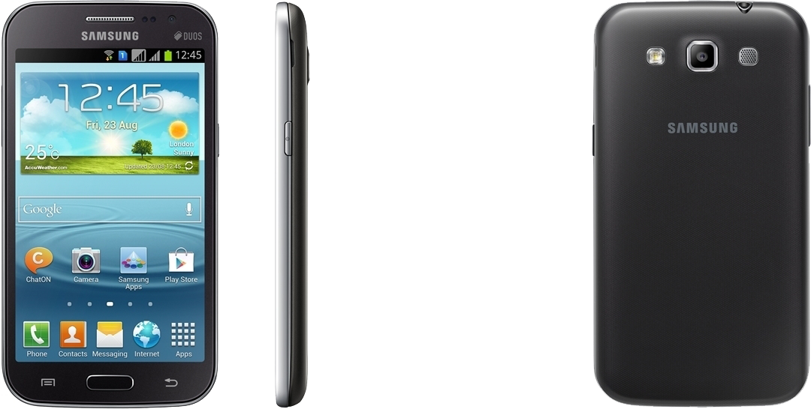

삼성 갤럭시 Win
1. 외관

삼성전자가 2013년 4월에 공개한 안드로이드 스마트폰.
2. 사양
| 프로세서 | 삼성 엑시노스 ModAP SHANNON222 SoC. ARM Cortex-A7 MP4 1.4 GHz CPU, ARM Mali-400 MP4 440 MHz GPU | ||
| 메모리 | 1 GB LPDDR2 SDRAM, 8 GB 내장 메모리, micro SDXC (최대 64 GB 지원) | ||
| 디스플레이 |
4.7인치 WVGA(480 x 800) RGB 서브픽셀 방식의 TFT-LCD (199 ppi) 멀티터치 지원 정전식 터치 스크린 |
||
| 네트워크 | 기본 | LTE Cat.4 HSPA+ 21Mbps HSDPA & HSUPA & UMTS | GSM & EDGE, Wi-Fi 802.11a/b/g/n, 블루투스 4.0+LE, NFC |
| - | - | ||
| 카메라 | 전면 30만 화소, 후면 500만 화소 AF 및 LED 플래시 | ||
| 배터리 | Li-lon 2000 mAh | ||
| 운영체제 | 안드로이드 4.2 (Jelly Bean) | ||
| 규격 | 70.7 x 133.3 x 9.7 mm | ||
3. 상세
2013년 3월, 삼성전자의 신제품에 대한 세간의 관심이 갤럭시 S4에 쏠려있을 때, 조용히 유출된 기기다.
2012년 하반기부터 자체적인 네이밍 법칙인 S-R-W-M-Y를 지키지 않고있기 때문에 정식 발매명에는 그다지 큰 의미는 없다.
초반에는 갤럭시 Win이라는 정식 발매명으로 알려졌다. 때문에 굳이 끼워 맞춰서 중간급인 W 라인업에 속하는 것으로 보였다.
하지만 출시 때는 위에서 언급한 대로 갤럭시 그랜드 콰트로와 갤럭시 Win 모두 사용하고 있다.